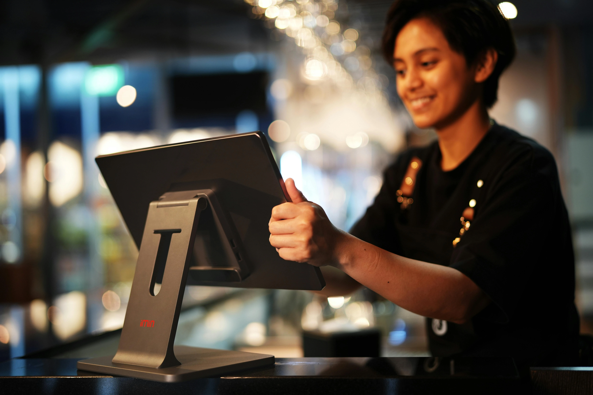

Logiciel de gestion restaurant 2026 : comparatif et guide de choix
Un restaurant sur deux utilise encore un système de caisse non connecté à sa gestion des stocks — c'est autant de fuites invisibles sur le food cost, de temps perdu en administratif et de risques lors des contrôles HACCP. Ce guide compare les principales solutions disponibles en France, détaille les modules indispensables et vous donne une méthode claire pour choisir sans vous tromper.
1. Pourquoi un logiciel de gestion est devenu indispensable en 2026
Pendant longtemps, gérer un restaurant à la main — bon de commande papier, fichier Excel pour les stocks, classeur HACCP — était une option viable. Ce n'est plus le cas aujourd'hui, pour trois raisons concrètes.
La loi anti-fraude TVA impose une caisse certifiée
Depuis le 1er janvier 2018, tout assujetti à la TVA doit utiliser un logiciel de caisse conforme à la loi anti-fraude (attestation NF525 ou équivalente). En cas de contrôle fiscal, l'absence d'attestation entraîne une amende de 7 500 € par logiciel non conforme. Cette obligation a définitivement mis fin à la caisse à tiroir non certifiée.
Le food cost ne se pilote pas à l'instinct
Un restaurant qui ne mesure pas ses consommations réelles en temps réel navigue à l'aveugle. Les logiciels qui connectent caisse et gestion des stocks calculent automatiquement l'écart entre le food cost théorique et le food cost réel — c'est là que se cachent les surportions, les pertes et parfois le vol. Sans outil, cet écart reste invisible jusqu'à la clôture mensuelle, quand il est trop tard pour réagir.
Les contrôles HACCP sont de plus en plus fréquents
La DDPP intensifie ses contrôles depuis 2023. Un Plan de Maîtrise Sanitaire bien tenu — relevés de températures horodatés, traçabilité des fournisseurs, fiches de nettoyage signées — est désormais une exigence documentée, pas une option. Les logiciels avec module HACCP intégré réduisent considérablement la charge administrative de cette traçabilité.
2. Les 5 modules clés à exiger dans votre logiciel
Tous les logiciels ne sont pas équivalents. Voici les cinq fonctions qui font la différence entre un outil de caisse basique et une vraie solution de gestion.
Module 1 — Caisse enregistreuse certifiée (POS)
C'est le cœur du système. Au-delà de la conformité légale, un bon module caisse doit gérer : les modifications de commande en cours, les tables et la salle graphique, les menus par période (midi/soir), les remises et offerts traçables, et la synchronisation avec la cuisine via bon de commande imprimé ou écran KDS (Kitchen Display System).
Module 2 — Gestion des stocks et des achats
Le module le plus rentable à moyen terme. Il doit permettre : la création de fiches techniques avec calcul automatique du coût matière, la gestion des inventaires (idéalement en mobilité via tablette), les alertes de seuil de réapprovisionnement, et la comparaison entre consommation théorique (selon les ventes) et consommation réelle (selon les inventaires). C'est cet écart qui révèle les fuites.
Module 3 — Planning et gestion du personnel
Un module planning efficace doit calculer automatiquement les heures travaillées, les heures supplémentaires (en respectant les règles de la convention collective CHR), et la masse salariale prévisionnelle. Il doit aussi alerter si vous dépassez votre ratio personnel/CA cible.
Module 4 — Traçabilité HACCP
Relevés de températures (manuels ou via capteurs connectés), DLC/DDM des produits, fiches fournisseurs, registres de nettoyage — ce module transforme votre classeur HACCP papier en un registre numérique horodaté, plus solide lors d'un contrôle DDPP. Certains logiciels proposent aussi des alertes automatiques en cas de dépassement de seuil de température.
Module 5 — Tableaux de bord et analytique
Un bon dashboard doit afficher en temps réel : le CA du jour vs objectif, le food cost de la semaine, le ticket moyen par service et le taux d'occupation des tables. L'accès à distance (smartphone) est un plus indispensable pour les gérants qui ne sont pas toujours sur place.
3. Comparatif des principales solutions 2026
Le marché français des logiciels de restauration s'est consolidé ces dernières années. Voici les solutions les plus utilisées, classées par profil de restaurant.
| Logiciel | Profil idéal | Points forts | Limite principale | Tarif indicatif |
|---|---|---|---|---|
| L'Addition | Restaurant traditionnel indépendant | Très complet, support FR, conformité NF525, stocks avancés | Interface moins moderne que la concurrence | ~79–149 €/mois |
| Zelty | Brasserie, bistrot, multi-services | iPad natif, API ouverte, intégrations nombreuses (Deliveroo, UberEats…) | Module stocks moins poussé que L'Addition | ~69–129 €/mois |
| Lightspeed Restaurant | Chaînes, multi-sites, gastronomie | Puissance analytique, multi-sites, intégration comptabilité | Plus cher, courbe d'apprentissage longue | ~119–299 €/mois |
| Tiller by SumUp | Café, snack, concept casual | TPE intégré SumUp, tarif accessible, simplicité d'usage | Gestion des stocks et HACCP limités | ~49–99 €/mois |
| Innovorder | Restauration rapide, QSR, dark kitchen | Borne de commande, KDS cuisine, click & collect natif | Peu adapté à la restauration traditionnelle à table | Sur devis (~150–250 €/mois) |
| Komia | Tous types — back-office tout-en-un | HACCP + stocks + planning dans un seul outil, conçu par des restaurateurs, élu Solution innovante FHT 2025 | Pas de caisse intégrée — se connecte à un POS existant (Zelty, L'Addition, Innovorder…) | 149 €/mois (pack complet) |
Tarifs indicatifs hors matériel et hors modules optionnels. Demandez toujours un devis personnalisé et une démo avant de signer.
Notre recommandation back-office : Komia. Là où la plupart des restaurants jonglent entre trois outils séparés — un pour le HACCP (Octopus HACCP), un pour le planning (Combo ou Skello) et un pour les stocks (Koust) — Komia regroupe les trois dans une interface unique à 149 €/mois. L'outil synchronise automatiquement les ventes de caisse avec les stocks, génère les variables de paie depuis le planning, et numérise l'intégralité du PMS. Conçu par des restaurateurs, élu Solution innovante 2025 au salon Food Hotel Tech, et compatible avec toutes les grandes caisses du marché. Essai gratuit sur komia.io →
4. Tarifs et coût total : ce que vous payez vraiment
Le tarif affiché de l'abonnement n'est jamais le coût total. Pour budgétiser correctement, intégrez tous les postes :
| Poste | Coût indicatif | Remarques |
|---|---|---|
| Abonnement logiciel (base) | 40–150 €/mois | Selon les modules souscrits |
| Modules complémentaires | 20–80 €/mois | Stocks avancés, planning, HACCP, fidélité... |
| iPad / tablette | 400–700 € (achat) ou 15–25 €/mois | La plupart des logiciels fonctionnent sur iPad |
| Imprimante tickets cuisine | 200–400 € (achat) ou 10–20 €/mois | Préférez une imprimante filaire en cuisine (robustesse) |
| Terminal de paiement (TPE) | 0–300 € selon offre + 0,7–1,5% des transactions | Négociez le taux de commission |
| Formation et mise en route | 200–800 € (une fois) | Souvent offert sur les offres d'ouverture |
| Maintenance et support | Inclus ou 20–50 €/mois | Vérifiez les horaires du support (service du soir !) |
Au total, comptez 100 à 300 € par mois pour un restaurant traditionnel bien équipé, ou 80 à 120 €/mois pour une solution simple sur un seul point de vente. Si vous ouvrez un restaurant, sachez que ces coûts sont éligibles à certaines aides à la création d'entreprise et peuvent être intégrés dans votre plan de financement.

5. Tout-en-un vs solutions spécialisées : que choisir ?
Le débat classique : faut-il choisir une plateforme qui fait tout, ou assembler les meilleurs outils de chaque catégorie ?
L'argument pour le tout-en-un
Un seul contrat, un seul interlocuteur support, une seule interface. Les données circulent naturellement entre les modules : une vente en caisse décrémente automatiquement les stocks, met à jour le food cost du jour et alerte si un seuil d'approvisionnement est atteint. Pour un restaurant indépendant ou une petite chaîne, c'est la solution la moins risquée. Komia incarne parfaitement cette approche côté back-office : HACCP, stocks et planning synchronisés dans un seul outil à 149 €/mois, couplé à la caisse de votre choix.
L'argument pour les solutions spécialisées
Si vous gérez plusieurs sites ou si votre activité a des besoins très spécifiques (traiteur événementiel, dark kitchen avec plusieurs marques, restauration collective), les meilleurs outils de chaque catégorie — un POS de référence couplé à un back-office unifié comme Komia — peuvent offrir une profondeur fonctionnelle supérieure. Le prix à payer reste la gestion de deux contrats distincts (caisse + back-office).
7. Les 5 pièges à éviter lors de votre choix
Piège 1 — Choisir sur la base du prix seul
Un logiciel à 40 €/mois qui vous fait perdre 4 points de food cost vous coûte 24 000 €/an sur 600 000 € de CA. La question n'est pas "quel est le moins cher ?" mais "quel est le meilleur retour sur investissement ?"
Piège 2 — Négliger le support client
Un incident de caisse un vendredi soir de service complet est une urgence absolue. Vérifiez les horaires du support (soir, week-end), le délai moyen de réponse et s'il existe un mode de fonctionnement hors-ligne en cas de panne Internet.
Piège 3 — Ignorer la compatibilité matérielle
Si vous avez déjà une imprimante tickets ou un TPE, vérifiez la compatibilité avant de signer. La plupart des logiciels iPad fonctionnent avec les imprimantes réseau Star Micronics ou Epson, mais certains sont exclusifs à leur propre matériel.
Piège 4 — S'engager sur un contrat long sans avoir testé
Méfiez-vous des contrats de 24 ou 36 mois proposés dès le premier rendez-vous commercial. Exigez au minimum un mois d'essai en conditions réelles. Les bons logiciels n'ont pas besoin de vous enfermer pour vous garder.
Piège 5 — Sous-estimer le temps de formation
Changer de logiciel de caisse perturbe toujours l'équipe pendant 2 à 4 semaines. Planifiez la migration en période creuse (entre deux saisons, début d'année), prévoyez une formation pour tout le personnel de salle et de cuisine, et assurez-vous que les fiches techniques existantes peuvent être importées plutôt que ressaisies manuellement.
Questions fréquentes sur les logiciels de gestion restaurant
Quel est le meilleur logiciel de caisse pour un restaurant en 2026 ?
Il n'existe pas de meilleur logiciel universel — le choix dépend de votre type de restaurant. Pour un restaurant traditionnel indépendant, L'Addition et Zelty sont très utilisés en France, avec un bon rapport fonctionnalités/prix. Pour une chaîne ou un concept en expansion, Lightspeed Restaurant offre plus de fonctionnalités multi-sites. Pour la restauration rapide, Innovorder est spécialisé. L'important est de vérifier la compatibilité avec votre matériel existant et la qualité du support client francophone.
Combien coûte un logiciel de gestion pour un restaurant ?
Les tarifs varient de 40 à 300 € par mois selon les modules souscrits. Une caisse seule (sans gestion des stocks ni HACCP) coûte généralement 40 à 80 €/mois. Une solution tout-en-un complète (caisse + stocks + planning + HACCP) revient à 150–300 €/mois. Ajoutez le coût du matériel (tablette iPad, imprimante tickets, TPE) : 800 à 2 500 € en achat ou 30–80 €/mois en location.
Un logiciel de caisse restaurant doit-il être certifié NF525 ?
Oui. Depuis le 1er janvier 2018, tout logiciel de caisse utilisé par un assujetti à la TVA doit être certifié ou auto-certifié conforme aux conditions d'inaltérabilité, de sécurisation, de conservation et d'archivage des données (loi anti-fraude TVA). En cas de contrôle fiscal, l'absence de cette attestation peut entraîner une amende de 7 500 € par logiciel non conforme. Les éditeurs sérieux fournissent cette attestation dans leurs documents contractuels.
Un logiciel de gestion des stocks réduit-il vraiment le food cost ?
Oui, de manière significative. Les restaurants qui adoptent une gestion informatisée des stocks constatent en moyenne une réduction de 2 à 5 points de food cost dans les 6 mois suivant l'implémentation. Les gains viennent principalement de la réduction des pertes (alertes DLC, rotation FIFO), de la détection des surportions (écart théorique/réel) et d'une meilleure négociation fournisseur basée sur des données de consommation réelles.
Peut-on gérer sa traçabilité HACCP avec un logiciel de gestion ?
Oui. Les solutions tout-en-un incluent généralement un module HACCP qui permet d'enregistrer les relevés de températures, les DLC, les fiches de traçabilité et les plans de nettoyage. Cela remplace les classeurs papier et facilite les contrôles de la DDPP. Attention : le logiciel ne remplace pas la formation HACCP obligatoire — il en facilite l'application au quotidien.
SaaS ou logiciel installé : quelle différence pour un restaurant ?
Aujourd'hui, quasiment tous les logiciels de restauration fonctionnent en SaaS (cloud) : vous payez un abonnement mensuel et accédez au logiciel via Internet. L'avantage est la mise à jour automatique et l'accès aux données à distance. L'inconvénient est la dépendance à la connexion Internet — vérifiez impérativement que le logiciel fonctionne en mode hors-ligne pour les périodes de coupure réseau. C'est un critère non négociable pour la caisse.
6. Comment choisir selon votre type de restaurant
Le type d'établissement est le premier filtre à appliquer avant de comparer les logiciels :